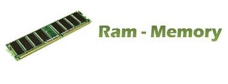
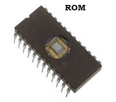
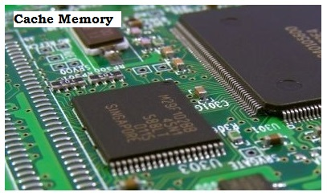
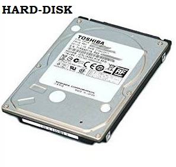

Q.2 Explain different computer memories RAM, ROM, cache and Hard disk in detail.
Answer :
Computer Memories - Computer memories is responsible for storing data into memory. Entered data and instructions must be stored into storage unit before the actual processing starts. Similarly, the result produced by the computer after processing must also be kept somewhere inside the computer system before being passed on to the output units. Moreover, the intermediate results produced by the computer, must also be preserved for ongoing processing. Functions which are performed by storage unit are as follows -
(a) It holds input data and instructions for processing.
(b) Holds intermediate results of processing.
(c) Holds final results of processing, before these results are released to an output device.
Thus, the CPU makes use of the following memory subsystems för carrying out its processing operations
RAM (Main Memory Unit) - The main memory is referred to as the internal memory or primary memory of the computer. It is also known as Random Access Memory (RAM). It is a temporary storage medium that holds the data only for a short period of time. The data stored in the RAM gets erased, when the computer is switched off. The memory space of RAM is limited and therefore all the files and instructions cannot be stored in it. These files and instructions are normally stored in a different location known as secondary storage and are copied from there to the RAM before execution. This technique is referred to as swapping. The memory space available in RAM also affects the speed of a computer system. As a result, the computer system need not read the data from the secondary storage again and again, thus making the processing faster. The main memory is also responsible for holding intermediate data transferred between CPU and I/O devices.

ROM (Read Only Memory) is the memory that stores the data permanently. This means that it does not lose the data when the power is switched off. The data can be easily read from this type of memory but cannot be changed. ROM is commonly used in devices such as calculators, laser printers, etc.
ROM does not allow the random access of data rather it allows sequential access of data. It is less expensive as compared to RAM and other storage devices such as magnetic disk, etc.
ROM is divided into the following types -
Programmable Read Only Memory (PROM) can be programmed by the user for converting critical and lengthy operations into microprograms that are fused into a chip. They can be executed at a very high speed. Once operations are written into a PROM, they cannot be altered.
Erasable Programmable Read Only Memory (EPROM) can be erased and reprogrammed. Before to accept any new contents, it is removed from the processor and exposed to ultraviolet light for some time.
Electrically Erasable Programmable Read Only Memory (EEPROM) can be erased and reprogrammed with special electric pulses.
Flash ROM (FROM) is a type of EEPROM that stores the information using floating-gate transistors, which can store electric charge for a longer period of time as compared to the normal transistors.
This memory is mainly used in the memory cards of mobile phones, digital cameras and iPods for storing data. The data stored in flash ROM memory can be easily transferred using transmission mediums like data cable, Bluetooth, and infrared technology.
Flash ROM has faster speed of reading data as compared to other types of ROM. It uses continuous memory cells for storing data.

Cache Memory – It is a small, fast, and expensive memory that stores the copies of data that is needed to be accessed frequently from the main memory. The processor, before reading data from or writing data to the main memory, checks for the same data in the cache memory. If it finds the data in the cache memory the processor reads the data from or writes the data to the cache itself because its access time is much faster than the main memory. The cache memory is placed between CPU and the main memory of the computer system, as shown in fig. 1.6. The transfer of data between the processor and the cache memory is bidirectional. The availability of data in the cache is known as cache hit. The capability of a cache memory Fig. 1.6 The Cache Memory is measured on the basis of cache hit. There are two types of cache memory in computer system -

(i) Primary Cache – It is also known as level 1(L1) cache or internal cache. The primary cache is located inside the CPU. It is smaller but fastest type of cache that provides a quick access to the frequently accessed data by the microprocessor.
(ii) Secondary Cache – It is also known as level 2 (L2) cache or external cache. The secondary cache is located outside the CPU. It is normally positioned on the motherboard of a computer. The secondary cache is larger than the primary cache but slower.
HARD DISK A hard disk is a non-volatile computer storage device containing magnetic disks or platters rotating at high speeds. It is a secondary storage device used to store data permanently, random access memory (RAM) being the primary memory device. Non-volatile means data is retained when the computer is turned off.

A hard disk drive is also known as a hard drive.
A hard drive fits inside a computer case and is firmly attached with the use of braces and screws to prevent it from being jarred as it spins. Typically it spins at 5,400 to 15,000 RPM. The disk moves at an accelerated rate, allowing data to be accessed immediately. Most hard drives operate on high speed interfaces using serial ATA (SATA) or serial attached technology. When the platters rotate, an arm with a read/write head extends across the platters. The arm writes new data to the platters and reads new data from them. Most hard drives use enhanced integrated drive electronics (EIDE) including cables and connectors to the motherboard. All data is stored magnetically, allowing information to be saved when power is shut off.
Hard drives need a read only memory (ROM) controller board to instruct the read/write heads how, when and where to move across the platters. Hard drives have disks stacked together and spin in unison. The read/write heads are controlled by an actuator, which magnetically reads from and writes to the platters. The read/write heads float on a film of air above the platters. Both sides of the platters are used to store data. Each side or surface of one disk is called a head, with each one divided into sectors and tracks. All tracks are the same distance from the center of the disk. Collectively they comprise one cylinder. Data is written to a disk starting at the furthest track. The read/write heads move inward to the next cylinder once the first cylinder is filled.
A hard drive is divided into one of more partitions, which can be further divided into logical drives or volumes. Usually a master boot record (MBR) is found at the beginning of the hard drive and contains a table of partition information. Each logical drive contains a boot record, a file allocation table (FAT) and a root directory for the FAT file system.